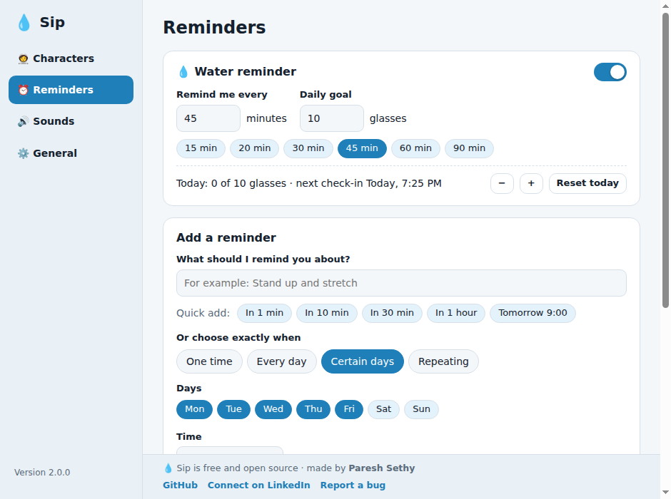
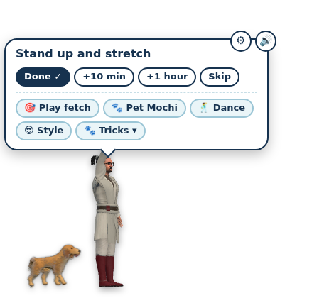
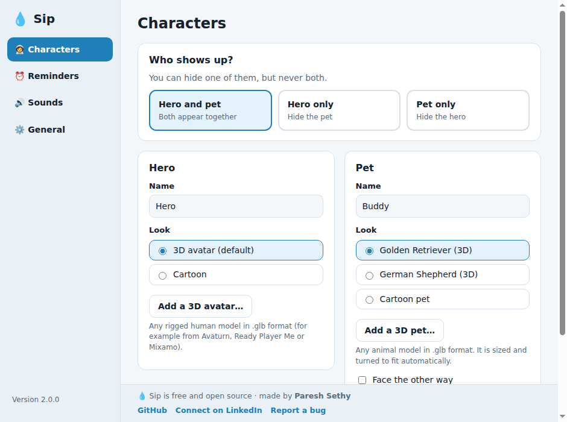
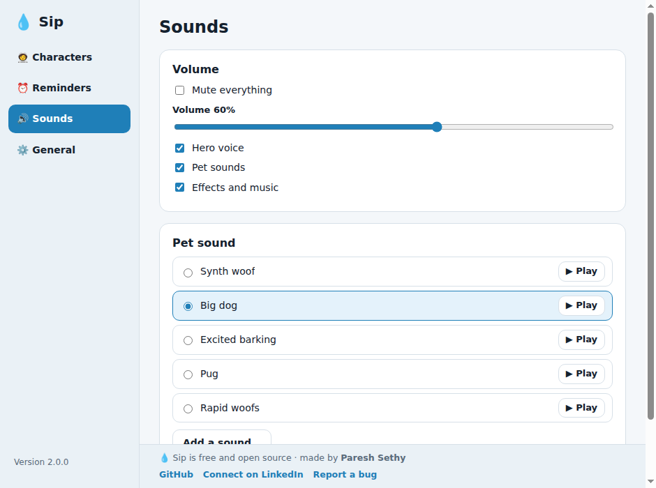
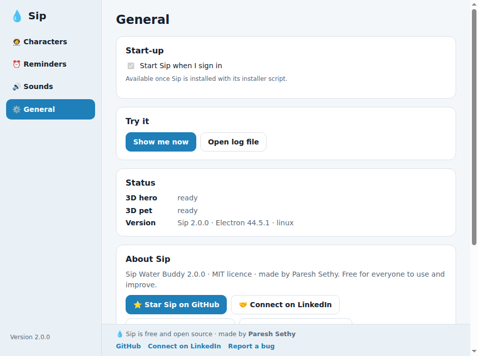

A 3D hero and a pet walk onto your screen when it's time to drink water, and stay until you answer. Add any other reminder you like. Free, open source, and never connects to the internet.
Download free View on GitHubWindows 10/11 (64-bit) installer or portable · Ubuntu / Linux · MIT license

Characters stay on screen until you answer: Done, +10 min, +1 hour or Skip.
Set your interval and daily goal, or add one-time, daily, weekly or every-N-minutes reminders.
Name them, pick their looks, or bring your own 3D avatar and pet (.glb) and sounds.
The characters walk across all your screens, and play fetch when you click.
No network, no telemetry, no account. Everything stays on your computer.
A real Settings window with keyboard access and a tray icon near your clock.




Download Sip-Water-Buddy-Setup-<version>.exe (or the portable .exe) from the latest release and run it. If Windows shows "protected your PC", choose More info → Run anyway (the app is not code-signed yet). It installs for your user only; no administrator rights needed.
Blocked PC ("unknown publisher")? Skip the installer: download the project folder (Code → Download ZIP) or the windows-x64.zip from the release, extract it, and double-click Start Sip (Windows, from folder).bat (needs Node.js) or Start Sip.bat from the prebuilt zip. Details in the README.
unzip sip-water-buddy-<version>-linux.zip && cd sip-water-buddy && ./install.shNeeds Node.js 20+ (the installer offers to install it) and internet once, to fetch the Electron runtime. Tested on Ubuntu 24.04 (GNOME).
Windows: Settings → Apps → Sip Water Buddy → Uninstall, then delete %APPDATA%\sip-water-buddy to remove your data. Linux: run the bundled uninstaller, which removes everything.
~/.local/share/sip-water-buddy/uninstall.shYes. It is open source under the MIT license, with no ads, accounts or subscriptions.
No. It never uses the network and has no telemetry. Your reminders stay on your computer.
macOS is not packaged or tested. Running from source may work; contributions are welcome.
Windows: uninstall from Settings → Apps and delete %APPDATA%\sip-water-buddy. Linux: run ~/.local/share/sip-water-buddy/uninstall.sh. Full steps are in the README.
Yes. Bring your own 3D avatar or pet as a .glb file, plus your own pet sounds.